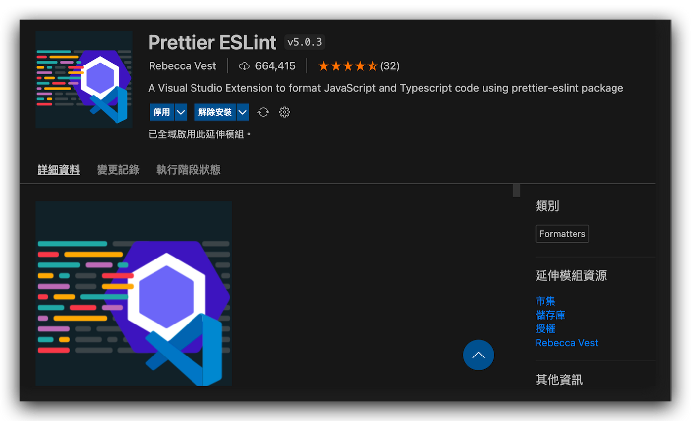
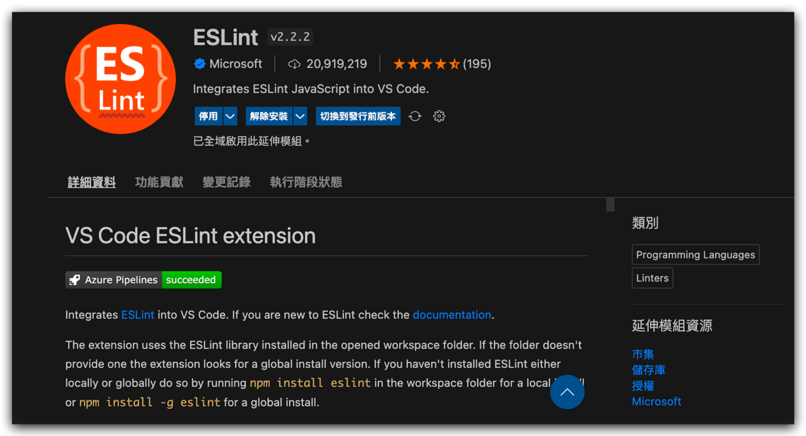
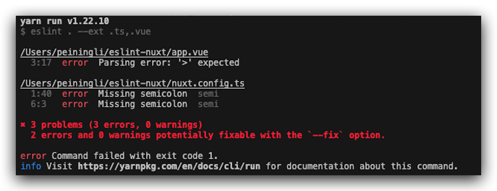
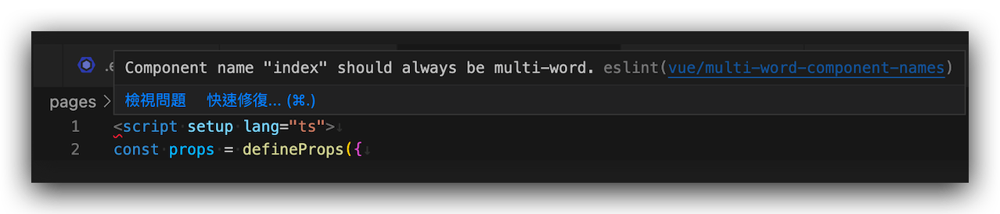
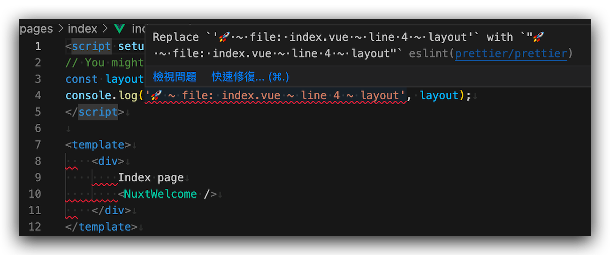
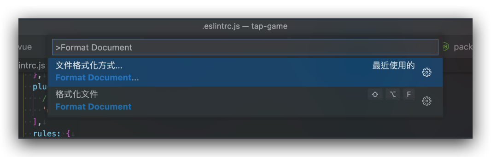
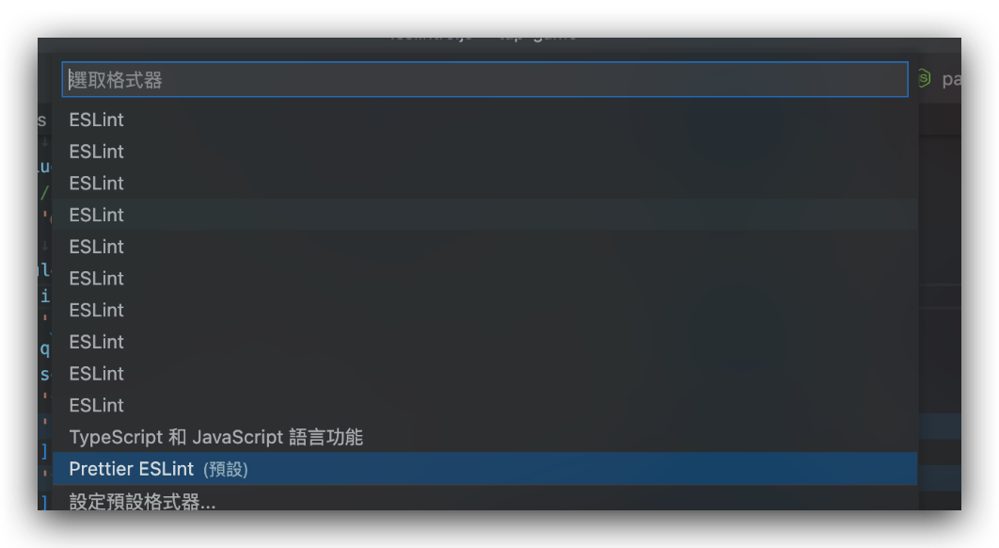

# [Vue] Nuxt3 + Eslint + Prettier +Vscode 設定 — 讓 Eslint 自動排版 Nuxt 專案

最近因為接案需要，決定使用 Nuxt 作為快速開發的框架。發現一段時間沒觀注，前端環境真是日新月異。 Nuxt 竟然也迎來第三版了。
因此這次在設定環境時順便記錄了一下如何在專案中結合 Eslint + Prettier 與 Vscode 的自動風格檢查兼排版。
# Nuxt
# 安裝
使用 npx 直接安裝
1
$ npx nuxi init <nuxt-app>
打開你的 nuxt-app
1
$ code nuxt-app
其中如果我們不希望我們的 .nuxt 相依專案以 .shim 的形式產生，我們先在 nuxt.config.ts 內將 shim 設成 false .
1
2
3
4
5export default defineNuxtConfig({
typescript: {
shim: false
}
})
安裝相依套件
1
$ yarn install
到這邊這些前置作業完成之後，我們先啟動一次 nuxt 讓他生成自己的 .nuxt 專案。
1
$ yarn dev -o
# Vscode
# Prettier Eslint

# Eslint

# Eslint
# Init
執行 npx eslint — init 初始化 .eslintrc.js 並自動安裝相關的 dependency，他會問你一些問題來據此產生相關的設定
1
2
3
4
5
6
7
8
9
10
11
12
13
14
15
16
17You can also run this command directly using ‘npm init @eslint/config’.
npx: 40 安裝成功，花費 3.812 秒
✔ How would you like to use ESLint? · style
✔ What type of modules does your project use? · esm
✔ Which framework does your project use? · vue
✔ Does your project use TypeScript? · No / Yes
✔ Where does your code run? · browser
✔ How would you like to define a style for your project? · prompt
✔ What format do you want your config file to be in? · JavaScript
✔ What style of indentation do you use? · 4
✔ What quotes do you use for strings? · single
✔ What line endings do you use? · unix
✔ Do you require semicolons? · No / Yes
The config that you’ve selected requires the following dependencies:
eslint-plugin-vue@latest @typescript-eslint/eslint-plugin@latest @typescript-eslint/parser@latest
✔ Would you like to install them now? · No / Yes
✔ Which package manager do you want to use? · yarn
產生出來的 .eslintrc.js 會像是這樣
1
2
3
4
5
6
7
8
9
10
11
12
13
14
15
16
17
18
19
20
21
22module.exports = {
“env”: {
“browser”: true,
“es2021”: true
},
“extends”: [
“eslint:recommended”,
“plugin:vue/essential”,
“plugin:@typescript-eslint/recommended”
],
“parserOptions”: {
“ecmaVersion”: “latest”,
“parser”: “@typescript-eslint/parser”,
“sourceType”: “module”
},
“plugins”: [
“vue”,
“@typescript-eslint”
],
“rules”: {
}
}
# Install Dependency
安裝相關的 dependency
1
$ yarn add -D eslint-plugin-vue@latest @typescript-eslint/eslint-plugin@latest @typescript-eslint/parser@latest eslint@latest typescript eslint-plugin-nuxt
在 package.json 的 scripts 中加上 “lint”: “eslint . — ext .ts,.vue” 然後使用 yarn lint 來測試 eslint 是否有生效.

! [ [image-20220704162435221.png] ]
# 修改 .eslintrc 加入 nuxt 與 eslint 的相關套件
把配置文件中 `extends` 做如下的修改：
”plugin:vue/essential”改成”plugin:vue/vue3-recommended”(前者是 vue2 的設定，後者為 vue3)”eslint:recommended”改成”plugin:nuxt/recommended”- 刪除
plugins內的”vue” - 如果檔案內出現 Component name should always be multi-word 的錯誤，這是因為 nuxt 提倡 vue 文件的 Component 應該要用 multi-word snack case 進行命名。我們可以在 rules 中增加
”vue/multi-word-component-names”: 0來關閉。

# Prettier
# Install Dependency
安裝 prettier, eslint-plugin-prettier, eslint-config-prettier 等相關套件
1
$ yarn add -D prettier eslint-plugin-prettier eslint-config-prettier
eslint-plugin-prettier: 讓我們可以在.eslintrc.js中直接在rules內使用prettier/prettier屬性設定.prettierrc，省去多增加這個 file 的 maintainance.eslint-config-prettier: 會自動關掉所有不必要且可能會跟 Prettier 相衝的設定，讓我們可以在 eslint 中設定自己要的 rule。舉例來說如果 eslint 的 rule 和 prettier 的 rule conflict 的時候 （例如 eslint 限制了必须單引號，prettier 也限制了必须單引號，那麼如果用 eslint 驅動 prettier 來做檢查的話就會提示兩種 error 儘管他們都指向同一種錯誤。）此時這個 Plugin 就可以關閉額外的 error 顯示。
之後，一樣修改 .eslintrc 中的 extends 內容：增加 ’plugin:prettier/recommended’
1
2
3
4
5extends: [
...,
"plugin:prettier/recommended",
...
]
此時可能會出現紅線佈滿每個檔案，這是因為 prettier 在偵測 rule 時，若是沒有發現 .prettierrc 在專案中的話，就會去往更 root 的地方找，有可能 root 的 prettier 設定與專案所需不符。

我們這時可以在 .eslintrc.js 中的 rules 中增加 prettier/prettier 的來告訴 prettier 我們的 eslint 要怎樣的規則，如此可以取代掉在專案中建立 .prettirerc
完整的 .eslintrc.js 最終會如下
1
2
3
4
5
6
7
8
9
10
11
12
13
14
15
16
17
18
19
20
21
22
23
24
25
26
27
28
29
30
31
32
33
34
35
36
37
38
39
40
41
42
43
44
45
46
47
48
49
50
51
52
53
54
55
56
57
58
59
60
61
62
63module.exports = {
env: {
browser: true,
es2021: true,
node: true,
},
extends: [
‘plugin:vue/vue3-recommended’,
‘plugin:@typescript-eslint/recommended’,
‘plugin:nuxt/recommended’,
‘plugin:prettier/recommended’,
],
parserOptions: {
ecmaVersion: ‘latest’,
parser: ‘@typescript-eslint/parser’,
sourceType: ‘module’,
},
plugins: [
// “vue”,
‘@typescript-eslint’,
],
rules: {
indent: [‘error’, 2],
‘linebreak-style’: [‘error’, ‘unix’],
quotes: [‘error’, ‘single’],
semi: [‘error’, ‘always’],
‘vue/multi-word-component-names’: 0,
‘comma-dangle’: [
‘error’,
{
arrays: ‘always-multiline’,
objects: ‘always-multiline’,
imports: ‘never’,
exports: ‘never’,
functions: ‘never’,
},
],
‘vue/html-self-closing’: [
‘error’,
{
html: {
void: ‘always’,
normal: ‘always’,
component: ‘always’,
},
svg: ‘always’,
math: ‘always’,
},
],
‘prettier/prettier’: [
‘error’,
{
printWidth: 120, // 最大長度
tabWidth: 2, // tab 縮排 2 空格
useTabs: false, // 使用空格縮排
singleQuote: true, // js 單引號
semi: true, // 要有分號
trailingComma: ‘es5’, // 使用 es5 規則規範結尾的逗號
arrowParens: ‘avoid’,
},
],
},
};
此時我們再使用 ctrl+s 保存，應該就會發現可以自動格式化檔案了。
# Trouble shooting
若是發現存檔後沒有如預期中自動格式化，可以檢查是否自己的 Vscode 預設格式化工具是 prettier-eslint
- 使用
cmd + p (ctrl + p)，輸入> Format Document

- 選擇 Prettier ESLint

之後再嘗試一次看看，基本上應該就要有反應了～
# Reference
- nuxt3 项目中使用 eslint 和 prettier+commitlint 附常用规则配置
- Prettier
- eslint-plugin-nuxt